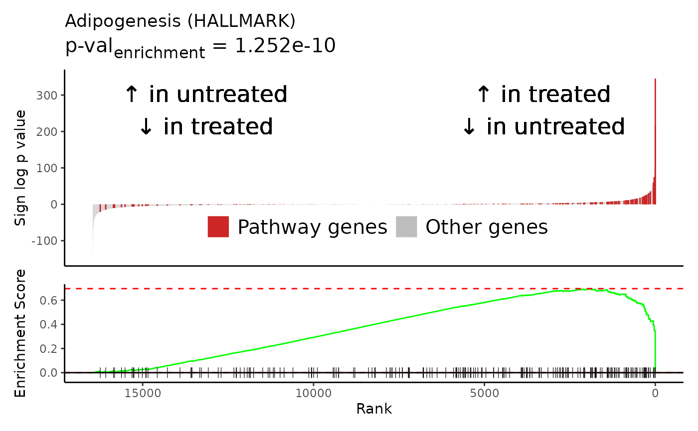
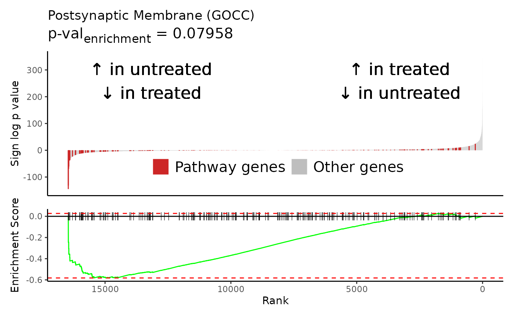

plot_GSEA_pathway wrapper that works nicely with lapply
Usage
plot_GSEA_pathway_batch(
path_name,
pthwys,
sig,
genecol = "gene",
rankcol,
rankcol_name = rankcol,
hllab = "Pathway genes",
hightolow = FALSE,
format_name = TRUE,
ignore_name = NULL,
lab_low = NULL,
lab_high = NULL,
legendpos = c(0.5, 0.2),
hl_color = "firebrick3",
label = length(pthwys[[path_name]]) < 50,
savedir = NULL,
sig_name = ""
)Arguments
- path_name
string; name of pathway
- pthwys
named list; key = geneset name, values = char vector of genes in geneset
- sig
dataframe; signature
- genecol
string; colname of gene names in
sig- rankcol
string; colname of values to rank by
- rankcol_name
string; descriptor of rankcol
- hllab
string; descriptor of highlighted genes
- hightolow
logical; T for high values on left, low on right
- format_name
logical; T to run pathway name through
Rubrary::format_GSEA_name- ignore_name
char vector; phrases to exclude title case for in
Rubrary::format_GSEA_name- lab_low
string; label for low rankcol values
- lab_high
string; label for high rankcol values
- legendpos
vector; value btwn 0-1 as legend coordinates (ggplot2 legend.position)
- hl_color
string; color for highlight
- label
logical; T to label points in plot
- savedir
string; directory path for saving plot
- sig_name
string; name of signature to append to save path
Examples
airway_deseq = Rubrary::airway_deseq_res
pathways <- Rubrary::GSEA_pathways
pws_plot <- c("HALLMARK_ADIPOGENESIS", "GOCC_POSTSYNAPTIC_MEMBRANE")
lapply(
pws_plot,
Rubrary::plot_GSEA_pathway_batch,
pthwys = pathways,
sig = airway_deseq,
genecol = "hgnc_symbol",
rankcol = "sign_log_p",
rankcol_name = "Sign log p value",
lab_high = "\U2191 in treated\n\U2193 in untreated",
lab_low = "\U2191 in untreated\n\U2193 in treated",
)
#> [[1]]

#>
#> [[2]]

#>